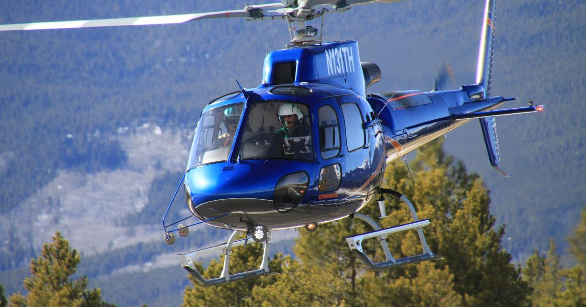
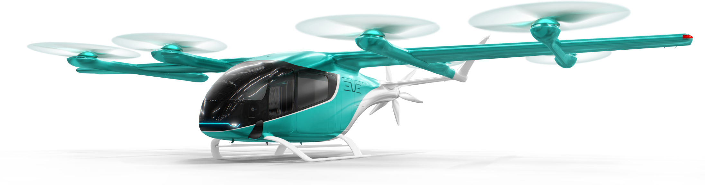
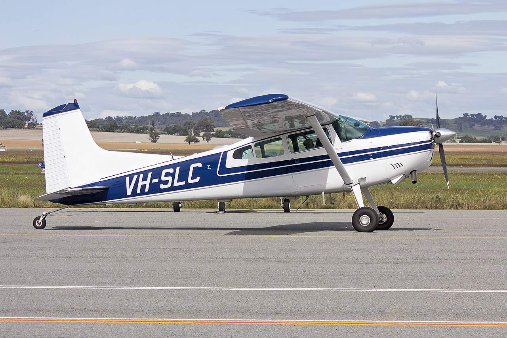

Revisão de Literatura
Fundamentação Teórica e Análise Crítica
Autonomous and Electric ground transportation
Urban air mobility - A comprehensive review and comparative analysis with autonomous and electric ground transportation for informing future research, 2021, relata os resultados de uma metanálise de 800 artigos sobre UAM, EV e AV (veículos elétricos e veículos autônomos) e serviços compartilhados (‘shared services’), publicados entre 2015 e 2020, buscando identificar/comparar tendências emergentes de pesquisas aplicáveis a UAM, em particular, nos campos da modelagem de demanda, operações e integração com a infraestrutura existente.
A conclusão é que existem bastantes sinergias entre as pesquisas nos domínios UAM, EV e AV a serem exploradas, dentre os quais: a) modelos de demanda mais refinados, que incorporam os tempos de adoção do UAM pelos usuários, b) modelos de simulação de alta fidelidade, que capturam as interações entre localização e topologia de vertiportos, demanda, precificação, despacho e restrições do espaço aéreo, c) demandas unidirecionais (‘one-way’) e requisitos de estacionamento próximo, e d) desenvolvimento de modelos mais realistas de consumo de energia ao longo do dia, visando a avaliar a capacidade da rede elétrica atual de suportar tais operações.
Enquanto UAM é ainda ‘green field’ (conceitual), EV e níveis iniciais de AV e serviços compartilhados já estão em estágio de ‘early adoption’, o que permite certo nível de observação e validação empírica, no domínio da infraestrutura.
Aircraft design concepts
A holistic review of the current state of research on aircraft design concepts and consideration for advanced air mobility applications, 2023, fornece uma visão bastante abrangente e detalhada dos resultados de pesquisas recentes relativas, em específico, ao projeto de aeronaves para aplicações AAM, agrupando-os em categorias de configuração de rotores e de sistemas de propulsão (segundo NASA e Vertical Flight Society), incluindo uma compilação dos 35 principais projetos de aeronaves da indústria à época em desenvolvimento, e analisando-as sob 8 prismas principais, quais sejam: alcance e ‘payload’, performance, impacto ambiental, viabilidade/maturidade (UML), tráfego e infraestrutura, ruído, segurança operacional do veículo, e segurança cibernética, sobre os quais o artigo recomenda pesquisas adicionais no que toca a análises quantitativas e sua utilização articulada em projetos AAM.
Opportunities and challenges of UAM
Can Urban Air Mobility become reality? Opportunities and challenges of UAM as innovative mode of transport and DLR contribution to ongoing research, 2024, apresenta resultados de pesquisas recentes em UAM e das respectivas contribuições do German Aerospace Center (DLR), no contexto de seu Projeto HorizonUAM, incluindo tópicos relativos a potencial de mercado e aceitação pública, projeto de aeronaves ( degradação de baterias, sistemas de bordo, desenho e simulação de cabines), infraestrutura, operações (U-Space, autonomia segura, navegação, comunicação e simulação de custos), além de simulação global de sistemas UAM.
Partindo de um resumo histórico das iniciativas de ‘mobilidade aérea urbana’ dos anos 50 aos dias atuais, e adotando a incomum terminologia de ‘vertidrome’, são discutidos os principais desafios na implementação da UAM como parte integrada do ecossistema de transporte, os principais resultados e ‘insights’ do Projeto HorizonUAM e suas implicações para os futuros sistemas de transporte aéreo, com horizonte de 2050. São apresentadas breves seções sobre as modalidades de serviços UAM, os tipos de aeronaves, áreas-chaves no campo regulatório, considerações sobre preços/tarifas destes serviços e fatores inconvenientes à população e ao ambiente, como, ruído aeronáutico, poluição sonora, visual, emissões de CO₂, privacidade, entre outros. Adicionalmente, complexidade, lucratividade, aceitação social e das comunidades são os tópicos de pesquisa recomendados pela DLR para o avanço no entendimento e na implementação da UAM.
Communications and Networking
Urban Air Mobility Communications and Networking - Recent Advances, Techniques, and Challenges, 2024, apresenta uma extensa revisão de literatura sobre tecnologias recentes que visam a resolver ou minimizar certo grupo de desafios complexos enfrentados pela UAM, quais sejam: a garantia de comunicações confiáveis e de níveis de ‘safety e security’ adequados, a gestão do tráfego aéreo, a deteção de colisões, o planejamento de rotas e mecanismos de localização e navegação.
Iniciando com os requisites de comunicação de ecossistemas UAM, em termos de cobertura, taxas de transmissão de dados, latência, eficiência de espectro, redes utilizadas e capacidades computacionais, passa-se a potenciais tecnologias-chave que satisfazem a estes requisitos e superam os respectivos desafios, seguidos da discussão de tópicos de pesquisa em aberto, desafios e direções para pesquisas futuras relativas à implementação da UAM. Em função dos voos a baixa altitude, é ressaltado o papel da conectividade ar-solo segura, confiável e escalável para funções CNPC - tanto funções C2 (‘comand and control’), como NPC (‘non-payload communications’), como gestão de congestionamento e de rotas de tráfego aéreo em pouso e decolagem, deteção de colisões, controle de topologia e TBO, bastante mais complexas que em grandes altitudes, dadas as interferências típicas nestes cenários urbanos (torres, prédios, obstáculos temporários).
Análises

1. Convergências técnicas entre os autores
Em geral, e a despeito da grande granularidade e de certa dispersão no tema/setor, os quatro artigos (autores) analisados demonstram, em nossa avaliação, nível adequado de convergência técnica, coerência e complementaridade, quanto aos conceitos, grandes blocos construtivos, tecnologias, desafios e oportunidades - e à luz das prioridades de suas respectivas instituições e empresas.
2. Divergências sobre viabilidade, maturidade tecnológica e cronograma
No Artigo 2, que trata do projeto das aeronaves para UAM, são encontradas menções relativas à falta de convergência e a divergências entre autores nos 3 aspectos acima - com Garrow [14] no item 1 e ao longo dos item 2, 3 e 5. A conclusão é que tais divergências seriam geradas pela falta de análises quantitativas e holísticas e do influxo constante de novos ‘designs’, em vez da concentração de novas pesquisas, desenvolvimentos e otimização nos ‘designs’ existentes mais promissores.
3. Principais gargalos regulatórios identificados
Em seus 10 anos de concepção, a certificação de tipo das aeronaves destinadas à UAM, pela FAA, EASA e demais CAAs, tem sido o maior obstáculo regulatório ao desenvolvimento do setor. Trata-se de ‘designs’ inéditos, totais ou parciais, para os quais inexistiam bases de certificação (requisitos, meios de cumprimento e planos de teste), as quais vêm sendo elaboradas pari passu com os processos e testes. Inexistem hoje aeronaves eVTOL certificadas pela FAA ou EASA - exceção da EHang-216, pela autoridade de aviação civil chinesa. Em seguida à CT vêm a certificação de organização de projeto e de produção industrial relativas àquele tipo certificado, além da de profissionais DER e DAR, oficinas e técnicos de manutenção.
4. Tecnologia considerada mais crítica para viabilização da UAM - justificar tecnicamente
A tecnologia na qual a maioria dos projetos, investimentos e operações de UAM apostam, em âmbito global, e cuja utilização segura, eficiente, regulatória e econômica ainda depende de maior domínio tecnológico e da respectiva maturidade operacional, é a das baterias de íons de lítio e suas variações químicas. São ainda pendentes de solução a utilização destas nas aeronaves eVTOL de propulsão elétrica ou híbrida e em sua certificação, devido a riscos de segurança operacional (incêndio, explosão a bordo), e o armazenamento, resfriamento, carregamento e a manipulação segura destas em solo e em trocas, de modo a evitar incêndios espontâneos. Do ponto de vista de performance e custo (capex e opex) das aeronaves, devido à relativamente baixa densidade de energia e alta relação peso/potência, ficam limitadas a autonomia, a velocidade e o alcance de voo.
Aplicação Operacional e Infraestrutural
Dimensionamento físico de vertiportos
A relação entre configuração aeronáutica e dimensionamento físico de vertiportos é determinada, em primeiro lugar, pelo disk loading — a razão entre empuxo gerado e área de disco do rotor. Essa grandeza define o tamanho dos rotores necessários para sustentar a aeronave em hover, o que por sua vez determina a área mínima da FATO (Final Approach and Take-Off area) e as zonas de proteção ao redor da plataforma.
A asa rotativa convencional opera com disk loading mais baixo, entre 96 e 214 N/m² (Kiesewetter et al., 2023), o que implica um rotor de diâmetro maior para um dado peso de decolagem, mas o comportamento aerodinâmico é previsível e o downwash é concentrado axialmente abaixo da aeronave. A área de FATO necessária segue padrões já consolidados pela norma brasileira RBAC 155, com dimensionamento circular baseado no D-value da aeronave e zonas de clearance laterais bem estabelecidas. Essa é, portanto, a configuração com maior compatibilidade imediata com a infraestrutura existente de helipontos, fato reconhecido pelo próprio DECEA no PCA 351-7 ao prever o aproveitamento da estrutura de helipontos como primeira fase de implantação da UAM no Brasil.
O Lift+Cruise utiliza rotores dedicados exclusivamente ao hover, desligados durante o voo de cruzeiro, e superfícies aerodinâmicas convencionais para sustentação em velocidade. Seu disk loading situa-se entre 200 e 400 N/m², e a zona de downwash durante a fase vertical é menos concentrada que na asa rotativa, pois os rotores são distribuídos ao longo da fuselagem. O resultado é uma FATO de formato circular com raio mínimo de 1,5 vezes o D-value da aeronave mais uma zona de proteção de 30 metros, conforme o critério do RBAC-E 94 (E94.3, item 3) para operações próximas de pessoas. Pak et al. (2025) documentam que vertiports de porte médio, entre 39×69 metros e 72×99 metros com capex estimado entre U$350 mil e U$950 mil, são compatíveis com essa configuração e com o perfil de missões intraurbanas curtas. O Lift+Cruise é também a configuração com melhor pontuação no AAM Reality Index de Kiesewetter et al. (2023), com score acima de 7 em 10, justamente pela combinação de projeto mais simples, footprint gerenciável e viabilidade de certificação no curto prazo.
O Tilt-wing, onde a asa inteira gira 90 graus para alternar entre hover e cruzeiro, opera com disk loading entre 300 e 550 N/m². O aspecto crítico aqui é a fase de transição: durante a rotação da asa, a aeronave percorre um envelope intermediário onde nem a eficiência de hover nem a de cruzeiro é plena, e o downwash assume uma geometria elíptica assimétrica que requer uma zona de clearance lateral aproximadamente 40% maior do que a do Lift+Cruise equivalente. Essa exigência eleva o footprint da FATO para o arquétipo de grande vertiport documentado por Pak et al. (2025), com dimensões de 120×55 metros, custo de construção entre U$6 e U$7 milhões e custo operacional anual entre U$15 e U$17 milhões. Além disso, a geometria da plataforma precisa acomodar a trajetória de aproximação com ângulo de planeio de 6 a 9 graus, mais inclinado que o padrão de aviação convencional, para evitar obstáculos urbanos, o que amplia ainda mais a zona de proteção longitudinal à frente da FATO.
O Tail-sitter é a configuração mais exigente em termos de infraestrutura física. Nessa concepção, a aeronave inteira gira 90 graus entre pouso e decolagem vertical, o que significa que a plataforma de pouso precisa ser capaz de receber e orientar a aeronave tanto na posição vertical quanto horizontal, com uma zona de rotação livre cujo raio mínimo é igual ao comprimento total da fuselagem. Adicionalmente, o controle durante a fase de rotação é intrinsecamente instável em velocidades baixas, tornando imprevisível a extensão da zona de segurança necessária. Não há equivalente normativo para essa infraestrutura no Brasil: o RBAC 155 e os padrões de heliponto existentes não contemplam plataformas inclinadas nem zonas de rotação livre de fuselagem, e o PCA 351-7 do DECEA ainda não inclui procedimentos específicos para essa configuração.
A lacuna regulatória central é, portanto, a ausência de uma norma brasileira de dimensionamento de vertiports diferenciada por configuração aeronáutica. O RBAC-E 94 da ANAC não estabelece dimensões de FATO para nenhuma categoria de eVTOL tripulado, pois seu escopo está limitado a aeronaves não tripuladas. O PCA 351-7 reconhece a necessidade futura de tal normatização, mas ainda depende de uma fase de regulamentação específica a ser desenvolvida conjuntamente entre ANAC e DECEA.
Separações operacionais e procedimentos
O perfil de aproximação e decolagem de cada configuração determina diretamente o corredor de separação necessário, a complexidade dos procedimentos ATC e a compatibilidade da operação com o espaço aéreo urbano denso. Há uma relação inversa fundamental: quanto maior o ângulo de aproximação, menor o corredor horizontal necessário e maior a compatibilidade com o ambiente urbano. A asa rotativa convencional e o Tail-sitter ocupam os extremos opostos dessa relação.
A asa rotativa convencional realiza aproximações quase verticais, com ângulos próximos de 80 graus em condições ideais. Isso minimiza a extensão do corredor de aproximação e, por consequência, a área de espaço aéreo que precisa ser protegida durante a operação. A separação operacional segue o padrão já consolidado para helicópteros no Brasil, regulamentado pelo RBAC 155 e pelas normas de controle de tráfego aéreo do DECEA para o SISCEAB. Esse enquadramento existente é uma vantagem competitiva significativa da asa rotativa no contexto brasileiro, especialmente em São Paulo, que opera o segundo maior movimento de helicópteros do mundo, com aproximadamente 700 aeronaves ativas e mais de 200 helipontos urbanos. A infraestrutura de separação e os procedimentos ATC já estão validados e em operação cotidiana.
O Lift+Cruise, por depender de superfícies aerodinâmicas para sustentação em cruzeiro, realiza aproximações com ângulos entre 12 e 15 graus — significativamente menos íngremes que a asa rotativa, mas ainda gerenciáveis em ambiente urbano com planejamento adequado de rotas. A separação operacional pode seguir, numa primeira fase, procedimentos VFR adaptados dos padrões de helicóptero, com possibilidade de migração gradual para IFR conforme a densidade de operações aumenta. O DLR testou no projeto HorizonUAM (Pak et al., 2025) um modelo de deconfliction baseado em rotas predefinidas para essa classe de aeronave, com gestão via protocolo MQTT integrado ao U-space, demonstrando que a separação por espaçamento temporal de 2 a 3 minutos entre aeronaves é viável com o framework BR-UTM em desenvolvimento pelo DECEA.
O Tilt-wing opera com ângulos de aproximação entre 6 e 9 graus durante a fase de transição, aproximando-se dos ângulos de aeronaves de asa fixa convencionais. Isso cria um corredor de aproximação consideravelmente mais extenso, com clearance lateral que excede em aproximadamente 40% o necessário para o Lift+Cruise equivalente. A implicação regulatória é direta: operações de Tilt-wing em ambiente urbano exigem coordenação IFR contínua com o ATC, pois a aeronave cruza altitudes e velocidades comparáveis às de aviação geral durante a transição, entrando potencialmente na TMA de Classe C dos grandes aeroportos urbanos como Congonhas (SBSP) e Santos Dumont (SBRJ). O PCA 351-7 prevê operações IFR para eVTOL, mas ainda não especifica os procedimentos de separação para aeronaves em fase de transição tiltrotor ou tilt-wing, que constituem o cenário mais complexo do ponto de vista de deconfliction.
O Tail-sitter representa o maior desafio de separação operacional entre as quatro configurações. A rotação de 90 graus da fuselagem gera uma trajetória côncava durante o pouso e a decolagem que é difícil de padronizar em procedimentos ATC convencionais, pois o vetor de velocidade da aeronave muda de direção de forma não linear ao longo da manobra. Em condições de vento cruzado ou de falha parcial de propulsão, a trajetória real pode desviar significativamente da trajetória planejada, tornando a definição de uma zona de proteção conservadora excessivamente grande para o ambiente urbano denso. Vascik e Hansman, citados por Garrow et al. (2021), demonstraram que apenas 34% dos locais de trabalho nas maiores metrópoles são acessíveis por UAM sob regras VFR sem limitações de ATC — e esse percentual seria ainda menor para o Tail-sitter, cuja trajetória de aproximação exige corredores mais amplos e procedimentos que ainda não existem em nenhuma jurisdição do mundo.
O RBAC-E 94 da ANAC estabelece como restrição fundamental que operações de RPAS só são permitidas em áreas distantes de terceiros (E94.103(f)), com separação mínima de 30 metros horizontais de pessoas não envolvidas (E94.3, item 3). Essa restrição é estruturalmente incompatível com a UAM intraurbana em todas as quatro configurações, pois aeronaves de passageiros inevitavelmente voam sobre áreas habitadas. A ICA 100-40 do DECEA impõe restrição análoga ao proibir operações sobre áreas densamente povoadas. O PCA 351-7 reconhece essa contradição e prevê a revisão dessas restrições como condição necessária para a implementação da UAM no Brasil, mas os dispositivos operacionais que substituirão a proibição atual ainda estão em fase de consulta pública normativa.
Requisitos energéticos e tempos de solo
A relação entre configuração aeronáutica e requisitos energéticos é a mais direta e quantificável de todas as dimensões analisadas, e tem implicações em cascata sobre os tempos de solo, a frequência de substituição de bateria, o dimensionamento da infraestrutura elétrica dos vertiports e, em última análise, a viabilidade econômica do serviço.
O parâmetro central é o lift-to-drag ratio (L/D), que determina a eficiência aerodinâmica durante o cruzeiro. A asa rotativa convencional tem L/D entre 1,5 e 5,3 (Kiesewetter et al., 2023), o que significa que aproximadamente 40% de sua energia total de missão é consumida na fase de hover e baixa velocidade, onde a eficiência é mínima. Em termos práticos, isso resulta em alta demanda energética por quilômetro voado e num ciclo de degradação acelerado da bateria, pois as correntes de carga e descarga durante o hover são elevadas. Por outro lado, o perfil de missão da asa rotativa é tipicamente de curta distância e baixa altitude, o que limita o tempo total de voo e, portanto, a energia consumida por missão.
O Lift+Cruise melhora substancialmente a eficiência ao desligar os rotores de hover durante o cruzeiro e utilizar superfícies aerodinâmicas para sustentação. O L/D sobe para a faixa de 7 a 12, e a distribuição energética da missão passa a alocar 40% da energia para o cruzeiro — a fase de maior eficiência — contra 20% para hover e 35% para a transição. Kiesewetter et al. (2023) observam que a bateria representa aproximadamente 50% do peso vazio de um eVTOL típico nessa configuração, o que impõe um limite prático ao alcance máximo enquanto a densidade energética das baterias não superar 400 Wh/kg, meta ainda não atingida comercialmente em 2025. O DLR adotou 250 Wh/kg como cenário de curto prazo e 500 Wh/kg como cenário de longo prazo em seus projetos de veículo (Pak et al., 2025), e a transição entre esses dois cenários muda significativamente os intervalos de substituição de bateria.
O Tilt-wing apresenta o melhor L/D em cruzeiro entre as quatro configurações, entre 13 e 18, tornando-o a escolha mais eficiente para missões regionais de longa distância. Contudo, essa eficiência vem acompanhada de um custo energético concentrado na transição: a fase de rotação da asa consome aproximadamente 73% da energia total da missão, conforme os dados de simulação do DLR (Pak et al., 2025). Esse pico de demanda durante a transição impõe ciclos de carga e descarga de alta intensidade sobre as células da bateria, o que acelera a degradação eletroquímica. O DLR quantificou esse efeito ao documentar que um tiltrotor no cenário de curto prazo atinge o limite de 80% da capacidade original após apenas 490 a 560 ciclos de voo, exigindo substituição de bateria em intervalos inferiores a dois meses com 11 voos diários. No cenário de longo prazo, com tecnologia aprimorada de aeronave mas degradação de bateria inalterada, esse intervalo estende-se para 2 a 3 meses. A degradação tem ainda um efeito direto no alcance operacional: um tiltrotor que parte com alcance de 160 km em bateria nova vê esse alcance cair para 107 km quando a capacidade atinge 80% do valor original, o que cria complexidade adicional para o planejamento de frota e atribuição de missões.
O Tail-sitter, apesar de atingir L/D entre 8 e 14 em cruzeiro, concentra seus gastos energéticos na fase de rotação da fuselagem inteira — um processo mecanicamente mais intenso que a simples inclinação de asa do Tilt-wing, pois envolve a reorientação de toda a massa da aeronave contra a gravidade e o vento. Isso resulta em picos de corrente de propulsão comparáveis aos do Tilt-wing, com ciclos de bateria estimados entre 600 e 1.200 voos antes da substituição, e intervalos de troca entre 1,5 e 3 meses dependendo da frequência operacional.
A consequência prática desses perfis para a infraestrutura de solo é dupla. Por um lado, todos os vertiports precisarão de carregadores de alta potência, entre 300 e 400 kW por pad, para manter tempos de recarga entre 9 e 23 minutos dependendo da configuração e da potência disponível. Garrow et al. (2021) calcularam que um aeroporto UAM em plena operação demandará aproximadamente 1 MW de pico de demanda elétrica — equivalente ao consumo de mil residências simultaneamente — em todas as quatro configurações analisadas. Essa demanda precisa ser atendida por infraestrutura de distribuição elétrica que ainda não existe nos helipontos brasileiros e que não tem previsão normativa específica no RBAC-E 94 ou no PCA 351-7. Por outro lado, a frequência de substituição de bateria, especialmente para Tilt-wing e Tail-sitter, exige que os vertiports disponham de estoque rotativo de baterias e capacidade de swap rápido em campo, com logística de descarte e recarga das baterias substituídas — um componente de ground operations completamente ausente da regulamentação brasileira atual.
O RBAC-E 94 aborda os requisitos energéticos de forma genérica ao exigir autonomia suficiente para completar o voo e pousar em segurança (E94.109) e redundância nos sistemas de energia em caso de falha simples (E94.409(b)(c)). A ICA 100-40 do DECEA acrescenta a obrigatoriedade do cálculo de autonomia e do planejamento alternativo de rota. Nenhum dos dois documentos, porém, estabelece um padrão quantitativo de reserva mínima para UAM — o DLR adotou 20 minutos de loiter como padrão operacional nos seus projetos, valor que provavelmente se tornará referência para futuras normas, mas que ainda não tem equivalente no arcabouço regulatório brasileiro.
Complexidade do gerenciamento do espaço aéreo urbano
O gerenciamento do espaço aéreo urbano para UAM é o aspecto em que a diversidade de configurações aeronáuticas produz os maiores desafios sistêmicos, porque cada configuração opera em envelopes distintos de altitude e velocidade, e a coexistência dessas aeronaves com diferentes perfis operacionais no mesmo espaço aéreo multiplica a complexidade de deconfliction.
A asa rotativa convencional opera tipicamente entre 150 e 300 metros AGL, com velocidades de cruzeiro entre 80 e 120 km/h. Esse envelope de operação é praticamente idêntico ao dos helicópteros que já voam sobre as grandes cidades brasileiras, o que significa que os procedimentos de gestão de espaço aéreo já desenvolvidos pelo DECEA para o SISCEAB — incluindo as rotas VFR para helicópteros em São Paulo, Rio de Janeiro e outras metrópoles — são diretamente aplicáveis. A complexidade adicional trazida pela UAM com essa configuração é essencialmente de escala: mais aeronaves do mesmo tipo no mesmo espaço, o que aumenta a carga de trabalho do controlador, mas não exige novos procedimentos. Pak et al. (2025) mostraram, em simulações de tráfego, que mesmo o aumento de volume com aeronaves de envelope conhecido gera um incremento significativo na carga do controlador, sugerindo a necessidade de uma posição ATC dedicada ao tráfego UAM/VFR em qualquer cenário de implantação em escala.
O Lift+Cruise ocupa um envelope intermediário, entre 200 e 500 metros AGL e 120 a 170 km/h, que começa a se sobrepor com o espaço aéreo de aviação geral em determinadas fases do voo. A complexidade de gestão aumenta em relação à asa rotativa por dois motivos principais. Primeiro, a aeronave muda de configuração — rotores ligados para hover, desligados para cruzeiro — ao longo da missão, alterando suas características de manobrabilidade e resposta a comandos de forma que os controladores precisam estar preparados para tratar. Segundo, as velocidades de cruzeiro são suficientemente elevadas para que a aeronave percorra distâncias consideráveis em pouco tempo, reduzindo a margem de correção em caso de desvio de trajetória. O DLR testou o gerenciamento dessa configuração no projeto HorizonUAM usando rotas predefinidas com algoritmos de deconfliction automático via U-space, e demonstrou que a solução é tecnicamente viável mas exige integração robusta entre o sistema UTM e o ATM convencional — integração que o BR-UTM do DECEA está construindo, mas que ainda não contempla aeronaves tripuladas.
O Tilt-wing opera no envelope mais alto entre as quatro configurações, com altitudes de cruzeiro entre 300 e 900 metros AGL e velocidades de 170 a 210 km/h. Nessa faixa, a aeronave frequentemente entra na TMA de Classe C dos aeroportos metropolitanos. No caso de São Paulo, a TMA do SBGR começa em altitudes relativamente baixas sobre determinados setores da cidade, e um Tilt-wing em cruzeiro para missões de 100 km ou mais precisaria cruzar essa TMA, exigindo coordenação explícita com o controle de aproximação — algo que hoje não existe para aeronaves de decolagem e pouso vertical. A complexidade é agravada pela fase de transição, durante a qual a aeronave percorre um envelope onde suas características aerodinâmicas mudam continuamente e a velocidade é intermediária entre hover e cruzeiro. Durante essa fase, a separação com outras aeronaves precisa levar em conta tanto o vetor de velocidade atual quanto a trajetória imediatamente futura após a conclusão da transição, o que exige um nível de consciência situacional do controlador que vai além do padrão atual.
O Tail-sitter representa o cenário de maior complexidade de gestão do espaço aéreo entre as configurações analisadas. A rotação de 90 graus da fuselagem durante o pouso e a decolagem cria uma janela de imprevisibilidade na trajetória da aeronave que é difícil de encapsular em procedimentos ATC padronizados. Em condições de vento cruzado ou de perturbação atmosférica — frequentes nos cânions urbanos das metrópoles brasileiras, onde prédios altos geram turbulência, gradientes de vento e zonas de sombra de sinal GNSS —, o desvio da trajetória planejada durante a rotação pode ser substancial. O RBAC-E 94 exige avaliação de risco operacional atualizada a cada 12 meses (E94.103(f)(2)), o que para o Tail-sitter precisaria contemplar modelos específicos de dispersão de trajetória em condições atmosféricas adversas, algo que ainda não existe na literatura regulatória brasileira. Kiesewetter et al. (2023) apontam a cibersegurança como um vetor adicional de complexidade em todas as configurações, especialmente o spoofing de GPS e o jamming de sistemas de navegação, vulnerabilidades que são agravadas precisamente nas condições de cânion urbano onde o sinal GNSS é mais fraco e a dependência de comunicação de dados para o ATM é maior.
O PCA 351-7 do DECEA reconhece explicitamente que o objetivo do empreendimento AAM é prover normas e estruturas para integrar operações de eVTOL ao espaço aéreo brasileiro com um número elevado de operações simultâneas, mas a especificação de como essa integração se dará para cada configuração aeronáutica ainda é uma lacuna normativa aberta. A experiência de Paris com os Jogos Olímpicos de 2024, documentada por Pak et al. (2025), onde a Câmara Municipal vetou os voos UAM previstos pela Volocopter e Groupe ADP, ilustra que a complexidade de gestão do espaço aéreo não é apenas um desafio técnico, mas também político: a percepção pública de risco associada a aeronaves de novo tipo voando sobre áreas densamente habitadas pode bloquear a implantação antes mesmo de a regulamentação técnica estar concluída.
Integração com sistemas ATM/UTM
A integração com sistemas de gerenciamento de tráfego aéreo é o aspecto em que a escolha de configuração aeronáutica tem as implicações mais duradouras, pois determina o nível de autonomia necessário, os padrões de comunicação exigidos, a arquitetura do sistema UTM e, em última análise, o tempo até que operações comerciais em escala sejam possíveis no Brasil.
A asa rotativa convencional tem o caminho de integração mais curto e bem definido. Como seu comportamento operacional é análogo ao de helicópteros convencionais, ela pode ser integrada ao sistema ATM existente do DECEA por meio de extensões incrementais dos procedimentos vigentes, sem necessidade de um novo framework de UTM. Em baixas densidades, o controle manual por controladores de tráfego aéreo já treinados é suficiente, e a migração gradual para automação parcial pode seguir o mesmo trajeto que a aviação comercial percorreu ao longo de décadas. O BR-UTM em desenvolvimento pelo DECEA, que registrou 235 mil solicitações de voo apenas no primeiro semestre de 2024 — crescimento de 60% em relação ao ano completo de 2023 —, está construindo a infraestrutura digital que, em versões futuras, poderá gerenciar também eVTOLs de asa rotativa em baixa altitude. O RBAC-E 94 já provê a base de aeronavegabilidade para essa categoria, e o RBAC 21 fornece o caminho de certificação de tipo.
O Lift+Cruise exige um nível intermediário de integração ATM/UTM. A mudança de configuração ao longo da missão — hover com rotores ativos, cruzeiro com rotores desligados — significa que o sistema UTM precisa rastrear não apenas a posição e velocidade da aeronave, mas também seu estado configurativo atual, pois as características de resposta a comandos e as margens de segurança são diferentes nas duas fases. O DLR desenvolveu no projeto HorizonUAM uma arquitetura de U-space baseada em protocolo MQTT que gerencia o scheduling e o sequenciamento de voos com essa classe de aeronave, integrando o gestor de vertidrome ao sistema UTM de forma que a aeronave recebe slots de pouso e decolagem dinamicamente, com ajuste em tempo real baseado em planos de voo, condições meteorológicas e emergências (Pak et al., 2025). Essa arquitetura é conceitualmente equivalente ao que o DECEA está construindo com o BR-UTM, embora o BR-UTM atual ainda esteja limitado a aeronaves não tripuladas abaixo de 400 pés. A extensão para eVTOL tripulados com o perfil de missão do Lift+Cruise requer, além da integração técnica, a resolução da proibição do E94.103(a) do RBAC-E 94, que veda o transporte de pessoas em aeronaves não tripuladas — o que implica que toda a cadeia de certificação do RBAC 21 precisa ser percorrida antes que essa configuração possa operar no sistema UTM brasileiro.
O Tilt-wing demanda a integração mais complexa entre sistemas UTM e ATM convencional, porque sua altitude e velocidade de cruzeiro a colocam regularmente em espaço aéreo controlado cuja gestão está fora do escopo do UTM e dentro da competência do ATM operado pelo DECEA via CINDACTA. A interface entre os dois sistemas — UTM para baixa altitude e ATM para altitudes controladas — é um dos problemas mais difíceis da regulamentação UAM em qualquer jurisdição. Na Europa, o regulamento U-space da EASA (Commission Implementing Regulation 2021/664) estabelece que a interface entre U-space e ATM deve ser provida por um AIM (Aeronautical Information Management) interoperável, e vários projetos de pesquisa foram desenvolvidos nessa direção (CORUS-XUAM, TINDAiR, PJ34W3 AURA), conforme documentado por Pak et al. (2025). No Brasil, a equivalente dessa interface ainda não existe: o BR-UTM não tem, até o momento, um protocolo definido de handoff com o sistema ATM do CINDACTA para aeronaves que transitam entre as camadas de espaço aéreo. Para o Tilt-wing, que cruzará essa fronteira em toda missão de maior alcance, essa lacuna é um bloqueio operacional direto.
O Tail-sitter representa o cenário de maior exigência técnica para a integração ATM/UTM, tanto pela complexidade de sua trajetória quanto pelos requisitos de autonomia associados à operação segura. A rotação de 90 graus da fuselagem precisa ser supervisionada por sistemas de machine learning capazes de monitorar em tempo real as condições do Operational Design Domain (ODD) — o conjunto de condições ambientais e operacionais dentro das quais os algoritmos de controle foram treinados e validados. O DLR desenvolveu especificamente para esse propósito o Safe Operation Monitor (SOM), um sistema que verifica continuamente se as condições reais de operação são consistentes com aquelas para as quais os componentes de ML foram certificados, encerrando a operação autônoma ou escalando para supervisão humana quando uma inconsistência é detectada (Pak et al., 2025). O SOM é essencialmente o equivalente funcional do que o RBAC 21 exigiria numa avaliação de risco de sistema para uma aeronave certificada em categoria experimental no Brasil — mas o caminho regulatório específico para certificar um sistema dessa natureza no contexto do RBAC-E 94 e do RBAC 21 brasileiro ainda não existe. A ANAC ainda não publicou diretrizes equivalentes à Concept Paper for Level 1 & 2 Machine Learning Applications da EASA, que é o documento de referência utilizado pelo DLR para guiar o desenvolvimento do SOM.
A síntese das cinco dimensões revela uma hierarquia clara de prontidão regulatória no Brasil. A asa rotativa convencional tem enquadramento imediato no RBAC 155, nas normas de helicóptero do DECEA e no sistema ATC existente. O Lift+Cruise tem um caminho regulatório em construção via PCA 351-7 e BR-UTM, com perspectiva realista de operação comercial no médio prazo, condicionada à resolução da proibição de transporte de pessoas em RPAS e à conclusão da fase PRENOR das normas operacionais do DECEA. O Tilt-wing exige corredores IFR dedicados, interface UTM/ATM e procedimentos de transição que ainda não existem em nenhum documento normativo brasileiro, posicionando-o num horizonte de longo prazo. O Tail-sitter, por fim, requer inovação regulatória em múltiplas frentes simultaneamente — procedimentos de separação, certificação de sistemas ML, infraestrutura de vertiport dedicada e protocolos de emergência para trajetórias instáveis — sem perspectiva de enquadramento no arcabouço atual. A coordenação entre ANAC, DECEA, ANATEL e Ministério da Infraestrutura, reconhecida pelo PCA 351-7 como condição necessária para a implantação da UAM no Brasil, é tanto mais urgente quanto mais avançada for a configuração aeronáutica pretendida.
Estrutura Regulatória e Planejamento
Como a regulamentação atual (FAA, EASA, ANAC) facilita ou limita a AAM?
A regulamentação destas agências tem desempenhado papel fundamental no desenvolvimento da UAM, através do trabalho conjunto com os fabricantes de aeronaves, visando acelerar a certificação destes veículos ao estabelecer novos requisitos de segurança, processos de certificação e testes em ambientes experimentais, com o objetivo de validar novos paradigmas de operação. Atuam ainda no desenvolvimento de sistemas que possibilitem a integração destas aeronaves com as normas de espaço aéreo existentes. Entretanto, a regulamentação pode também limitar o avanço da UAM, dados os processos de certificação ainda complexos e demorados, assim como, lacunas regulatórias relacionadas com os vertiportos e com as operações urbanas em baixa altitude.
Quais riscos comunitários devem ser considerados no planejamento urbano?
Um dos principais riscos comunitários é o ruído aeronáutico - ainda que projetadas para serem mais silenciosas, aumento da frequência de voos pode gerar incômodos significativos para moradores e instituições próximos a vertiportos e/ou rotas aéreas. Outro aspecto importante é a segurança operacional - em áreas densamente povoadas, falhas técnicas, colisões ou emergências podem constituir riscos para pessoas e infraestruturas no solo. O planejamento urbano deve considerar rotas seguras, áreas de pouso de emergência, comunicações confiáveis e recursos avançados de controle de tráfego aéreo.
Como equilibrar inovação tecnológica e segurança operacional?
É fundamental adotar processos rigorosos de testes e certificação, antes da liberação e entrada de novas tecnologias em operação. Autoridades reguladoras, FAA, EASA e ANAC, em geral elaboram novas bases de certificação (Special Conditions) para novas aeronave e sistemas, assim como, extensivos testes, para garantir que a inovação (geralmente motivada por economias, maiores níveis de serviço ou performance), não comprometa a confiabilidade das operações. O equilíbrio entre inovação e segurança é alcançado por meio de regulamentação adequada, testes rigorosos, implementação gradual e colaboração estreita entre reguladores e fabricantes. Na aviação civil, a segurança operacional deve servir de fator de desempate vis-à-vis novas tecnologias, até que rigorosamente provadas.
A AAM é solução para mobilidade rural ou permanece centrada em grandes centros?
A UAM/AAM é geralmente associada a grandes metrópoles porque o conceito veio da Uber Elevate, em 2016, principalmente para reduzir congestionamentos e gerar novas receitas, melhorando assim o transporte público em cidades densamente povoadas (UAM). A AAM, conceito mais amplo originado na NASA, hoje adotado pela ICAO, preconiza o uso de drones¹ e de aeronaves VTOL para transportar passageiros e carga nos âmbitos urbano, rural e regional (RAM), operando a partir de vertiportos e integrando-se a outros modais de transporte. ¹Drones atualmente não têm normas ou previsão para transporte de passageiros.
Exercício Técnico Estruturado
1. Alcance, velocidade e capacidade
A tabela 1 apresenta a explicação de cada categoria:
| Tipo | Significado | Exemplo |
|---|---|---|
| CTOL (E2) | Conventional Takeoff and Landing (pista obrigatória) | Aviões comerciais |
| VTOL (H125) | Vertical Takeoff and Landing | Helicópteros |
| eVTOL (EVE) | Electric VTOL | Futuros air taxis |
| STOL (Cessna 185) | Short Takeoff and Landing | Bush planes |
E2

H125

EVE

CESSNA 185

A tabela 2 apresenta o alcance, velocidade e capacidade de cada aeronave:
| Tipo | Alcance | Velocidade de cruzeiro | Capacidade de passageiros |
|---|---|---|---|
| CTOL | 5.556 km | Aproximadamente 870 km/h | 146 passageiros |
| VTOL | 630 km | Aproximadamente 246 km/h | 1 piloto + 5 a 6 passageiros |
| eVTOL | 100 km | Aproximadamente 110 a 220 km/h | 1 piloto + 4 passageiros |
| STOL | 1.330 km | Aproximadamente 268 km/h | 1 piloto + 5 passageiros |
2. Tipo de propulsão de cada aeronave
A tabela 3 apresenta o tipo de propulsão de cada aeronave:
| Tipo | Propulsão |
|---|---|
| CTOL | Turbofan de alto bypass |
| VTOL | Turboshaft (turboeixo) |
| eVTOL | Distributed Electric Propulsion (DEP) |
| STOL | Pistão (motor a combustão interna) |
3. Ambiente operacional predominante
| Aeronave | Ambiente operacional predominante |
|---|---|
| Embraer E195-E2 (família E2) | Operações comerciais regionais e de média distância, conectando cidades e hubs em aeroportos com infraestrutura completa e pistas pavimentadas. |
| Cessna 185 Skywagon | Operações utilitárias e em regiões remotas, frequentemente em pistas curtas, não pavimentadas ou áreas isoladas, usadas para transporte, carga e missões especiais. |
| Airbus H125 | Operações de helicóptero utilitário em ambientes diversos, como resgate, policiamento, transporte executivo, offshore e áreas montanhosas, podendo operar sem necessidade de pista. |
| eVTOL da Eve Air Mobility | Operações de Mobilidade Aérea Urbana (UAM), realizando voos curtos dentro de cidades entre vertiportos, focadas em transporte rápido de passageiros. |
4. Desafios regulatórios associados
| Aeronave | Principais desafios regulatórios |
|---|---|
| E195-E2 | Regulamentação bem estabelecida, pois é um avião comercial convencional. Os desafios concentram-se em certificação de novas tecnologias (motores mais eficientes, aviônicos) e certificação operacional para companhias aéreas. |
| Cessna 185 | Regulamentação tradicional e consolidada, pois é uma aeronave a pistão clássica. Os desafios regulatórios são relativamente baixos e envolvem apenas certificação, manutenção e operação conforme regras de aviação geral. |
| H125 | Regulamentação também consolidada para helicópteros, mas existem desafios adicionais relacionados a operações especiais, como resgate, policiamento, operações offshore e voos em baixa altitude em áreas urbanas. |
| eVTOL da Eve | Apresenta os maiores desafios regulatórios, pois envolve novas tecnologias e novos conceitos operacionais. Reguladores ainda estão desenvolvendo normas para certificação de aeronaves eVTOL, vertiportos, gestão de tráfego urbano e integração com drones. |
Aeronaves tradicionais como o Cessna 185, H125 e E2 enfrentam poucos desafios regulatórios porque operam dentro de um sistema já consolidado. Já os eVTOL de UAM, como o da Eve, enfrentam desafios muito maiores, pois exigem novas regras para certificação, infraestrutura urbana, gestão do espaço aéreo e integração com drones.
5. Implicações para vertiportos ou aeródromos
| Aeronave | Infraestrutura principal | Escala da infraestrutura |
|---|---|---|
| E2 | Aeroportos comerciais | Grande |
| Cessna 185 | Aeródromos pequenos | Pequena |
| H125 | Helipontos | Média |
| Eve eVTOL | Vertiportos | Pequena e urbana |
Cada aeronave exige um tipo diferente de infraestrutura. Aviões comerciais como o E2 dependem de aeroportos completos, enquanto aeronaves utilitárias como o Cessna 185 podem operar em aeródromos simples. Helicópteros como o H125 utilizam helipontos, e os eVTOL da Eve representam um novo paradigma, operando em vertiportos urbanos projetados para mobilidade aérea urbana.
Consolidação
Cite três desafios urbanos críticos para implementação da AAM.
De um lado, as edificações, acidentes geográficos, obstáculos temporários (construções, maquinários), torres elevadas de celular e seu potencial de interferência EM nas comunicações. De outro, o ruído e a possível violação da privacidade dos indivíduos, empresas e suas instalações e operações. E ainda, a efetiva integração com os demais modais nas cidades - seja pela dificuldade de estabelecer vertiportos em pontos necessários da malha urbana (legislação), ou por inviabilidade econômica destes para os respectivos operadores.
Diferencie operacionalmente Sub-Urban-Commuter e Airport Shuttle.
Suburban Commuter: são moradores de áreas/bairros distantes do centro ou de distritos industriais e/ou comerciais de grandes cidades, que viajam diariamente para o local de trabalho, em condução própria ou compartilhada (< 70 Km, voo a 150 Km/h).
Airport Shuttle Service: é um serviço de transporte compartilhado, programado ou sob demanda, de e para aeroportos, geralmente com paradas predeterminadas e custo menor que um táxi individual (< 30 Km, voo a 150 Km/h).
Quais fatores influenciam a aceitação pública da Mobilidade Aérea Urbana?
O custo, possivelmente muito elevado, das passagens/tarifas, comparados aos dos demais modais disponíveis, a resistência emocional (medo) a utilizar este novo meio de transporte aéreo, ainda não ou pouco provado no que toca à sua segurança - são fatores que podem influenciar negativamente a aceitação e o uso; o valor do tempo associado a este modal por executivos, empresas ou camadas mais ricas, a atração pelas novidades tecnológicas e a percepção, interna e externa, de status social - são fatores que podem influenciar positivamente a aceitação e o uso.
Quais três infraestruturas são indispensáveis ao ecossistema AAM?
Os ‘vertiportos’ - infraestrutura para pouso e decolagem, embarque/desembarque de passageiros, recarga ou troca de baterias e integração com modais terrestres; a infraestrutura específica de energia para os vertiportos, a ser dimensionada e provida, via projetos/contratos industriais especiais com os respectivos operadores; infraestrutura digital para o gerenciamento de tráfego nas imediações dos vertiportos e no espaço aéreo ao longo das rotas/corredores das aeronaves. Todas constituem investimentos de alta monta e de retorno de longo prazo, tanto para os operadores de vertiportos como para, no caso do Brasil, o DECEA, na modernização/adaptação de seus sistemas CNS/ATM, ambos sujeitos à coordenação institucional da SAC, no que toca a políticas públicas, planejamento e programas de investimentos aeroportuários e concessões.
Qual subsistema (UAM, RAM ou Rural) apresenta maior complexidade regulatória? Justifique.
Em complexidade regulatória, a UAM ocupa o primeiro lugar, por se tratar de operação a baixa altitude, tipicamente sobre grandes cidades/metrópoles e seus obstáculos à navegação, comunicações RF, regras para localização de vertiportos e aversão ao ruído, entre outros. Operações em zonas rurais e de baixa densidade populacional são menos complexas que a UAM, muito associadas ao agronegócio, mineração, extrativismo e turismo, e devem sofrer menos restrições regulatórias que as urbanas, embora limitadas na disponibilidade de meios digitais para comunicação e recursos de infraestrutura ou de controle do tráfego aéreo. A RAM é, em realidade, uma extensão da Aviação Regional, visando potencializar rotas e aeroportos regionais pouco utilizados, cuja infraestrutura aeroportuária e de ATC pode ser aproveitada/adaptada para operação de VTOLs, e-VTOLs, s-TOLs e c-TOLs.